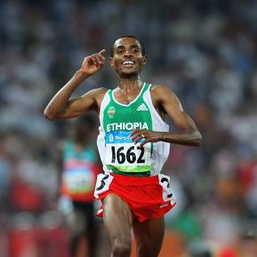

ETHIOPIA HAVE MANY ATHLTICS

Qananiisaa baqqalaa was born 13 June 1982 is an Ethiopian long-distance runner.
He was the world record holder in both the 5000-metre
and 10000-metre from 2004 (5,000m) and 2005 (10,000m) until 2020. He won the gold medal in both the 5000 m and
10,000 m events at the 2008 Summer Olympics.
At the 2004 Olympics, he won the gold medal in the 10,000 m and the silver medal in the 5000 m.
He is the most successful runner in the history of the IAAF World Cross Country Championships, with six long (12 km)
course and five short (4 km) course titles. He won the 10,000 m title at the World Championships in Athletics in 2003, 2005, 2007 and 2009
Kenenisa was unbeaten over 10,000 m